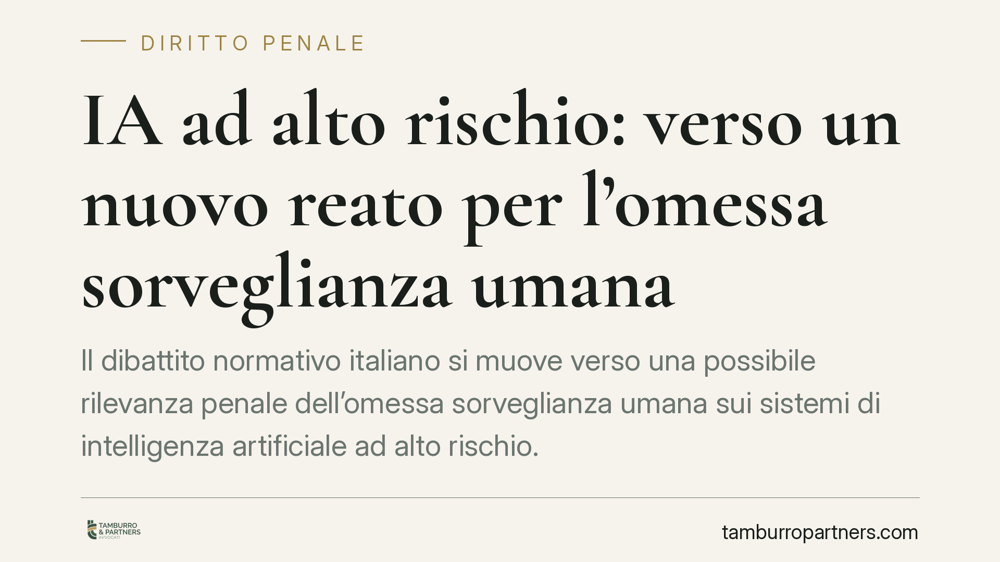

IA ad alto rischio: verso un nuovo reato per l'omessa sorveglianza umana
Il dibattito normativo italiano si muove verso una possibile rilevanza penale dell'omessa sorveglianza umana sui sistemi di intelligenza artificiale ad alto rischio. Nulla è ancora definitivo, ma il quadro europeo è già vigente e impone scelte organizzative. Analizziamo lo stato dell'arte, distinguendo ciò che è certo da ciò che è soltanto atteso, e indichiamo le cautele ragionevoli per imprese e professionisti.

Di cosa si parla (e di cosa non si parla ancora)
Alcune ricostruzioni giornalistiche riferiscono di un futuro intervento che introdurrebbe un nuovo reato a carico di chi non controlla, o manomette, sistemi di intelligenza artificiale classificati come "ad alto rischio". Si parla di una possibile nuova fattispecie nel codice penale e di modifiche al regime probatorio nelle cause civili risarcitorie.
Occorre chiarezza. Allo stato, non risulta vigente un reato specifico di "omessa sorveglianza" sull'IA. Qualsiasi riferimento a un decreto datato 2026, a un nuovo articolo del codice penale o a una data di entrata in vigore certa va trattato, finché il provvedimento non è pubblicato in Gazzetta Ufficiale, come ipotesi o iniziativa in corso di elaborazione, non come diritto applicabile.
Questa distinzione non è un tecnicismo: costruire decisioni aziendali su una norma non ancora esistente è un errore. Costruirle ignorando il quadro europeo già vigente lo è altrettanto.
Inquadramento normativo: ciò che è già certo
Il riferimento solido è il Regolamento (UE) 2024/1689 (AI Act), già in vigore e di applicazione progressiva. Il Regolamento individua i sistemi "ad alto rischio" principalmente nel suo Allegato III, che elenca ambiti sensibili: tra questi, i sistemi usati in materia di occupazione, gestione dei lavoratori e accesso al lavoro autonomo — quindi strumenti di selezione dei candidati, valutazione delle prestazioni e monitoraggio.
Per questi sistemi l'AI Act impone, tra l'altro, misure di sorveglianza umana (art. 14): devono esistere persone fisiche in grado di comprendere, supervisionare e, se necessario, interrompere il funzionamento del sistema.
Sul piano penalistico interno, oggi la norma più prossima al tema della sicurezza è l'art. 437 c.p., che punisce chi dolosamente omette di collocare, o rimuove, impianti e cautele destinati a prevenire infortuni sul lavoro. È da questo impianto che un eventuale legislatore muoverebbe, se decidesse di estendere la tutela ai sistemi automatizzati. Ma, lo ribadiamo, si tratterebbe di una novella futura, non del diritto attuale.
Implicazioni pratiche
Il messaggio operativo non cambia a seconda che il reato arrivi o meno. Chi utilizza IA ad alto rischio è già oggi tenuto al rispetto dell'AI Act, con responsabilità civili e sanzioni amministrative rilevanti in caso di violazione.
Tre profili meritano attenzione fin da ora.
Delega effettiva, non formale. Un'eventuale responsabilità delle figure apicali non si neutralizza con una delega sulla carta. Conta chi ha reale potere di spesa, intervento e controllo. Una delega priva di autonomia e risorse non protegge il delegante.
Equilibrio probatorio. Le evoluzioni discusse a livello europeo e nazionale tendono a facilitare la posizione del danneggiato, ad esempio tramite ordini di esibizione documentale a carico di imprese e fornitori. In pratica, chi dispone della documentazione tecnica potrebbe essere chiamato a produrla: l'assenza di tracciabilità si trasforma in una debolezza processuale.
Profilo 231. Se un nuovo reato venisse introdotto, perché l'ente ne risponda occorrerebbe che fosse inserito tra i reati-presupposto del D.lgs. 231/2001: non è un automatismo. Aggiornare per tempo il modello organizzativo resta comunque una scelta prudente, a prescindere dall'esito legislativo.
Il focus giuslavoristico
L'area più esposta è quella dei sistemi di IA applicati al rapporto di lavoro: screening dei curriculum, valutazione del personale, strumenti di monitoraggio. Rientrano tra gli usi ad alto rischio dell'Allegato III e intersecano anche la disciplina su controlli a distanza e trattamento dei dati dei lavoratori. Qui la sorveglianza umana non è un adempimento formale, ma presidio contro decisioni discriminatorie o opache.
Cosa fare in concreto
- Mappa i sistemi: individua quali strumenti di IA in uso rientrano, o potrebbero rientrare, tra quelli ad alto rischio dell'Allegato III del Reg. UE 2024/1689.
- Formalizza la sorveglianza umana: definisci chi supervisiona ogni sistema, con quali poteri di intervento e di arresto, documentando la procedura.
- Verifica le deleghe: accerta che le deleghe siano dotate di autonomia, risorse e poteri reali, non solo di firme.
- Conserva la documentazione tecnica: istruzioni del fornitore, log, valutazioni di conformità. In sede contenziosa può essere richiesta.
- Aggiorna il modello organizzativo: valuta con i consulenti l'adeguamento del modello 231 e delle policy interne, monitorando l'evoluzione normativa.
È opportuno avviare questa verifica senza attendere un intervento penale la cui entrata in vigore è, ad oggi, soltanto eventuale.
Disclaimer
Contributo informativo a cura di Tamburro & Partners - Avv. Giuseppe Tamburro. Non costituisce parere legale.
Ogni condominio ha una storia a sé.
Se gestisci un'amministrazione e vuoi un confronto su una specifica questione condominiale, scrivi allo studio. Ti rispondiamo entro un giorno lavorativo.